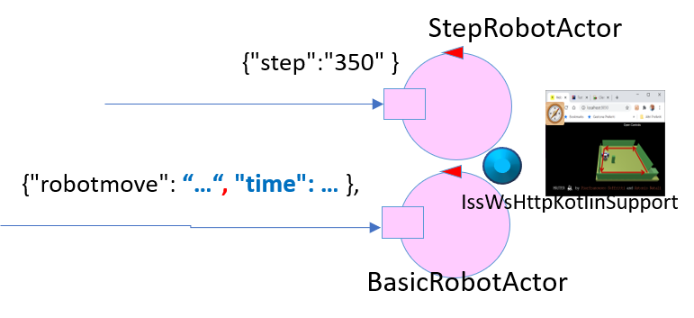
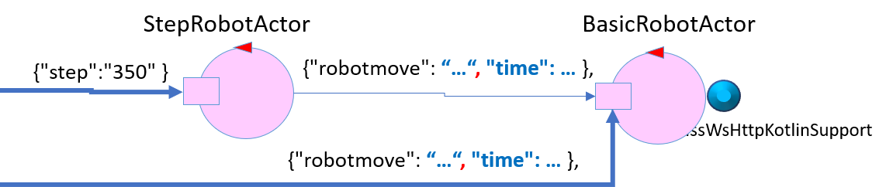
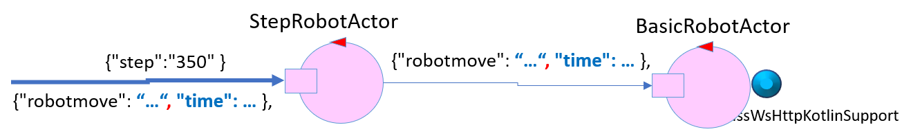
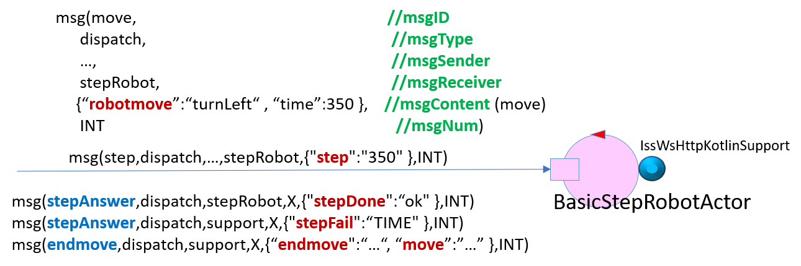

Pros & cons
As usully happens in oop, the
Single Responsibility Principle could induce
the software designer to distribute different behaviours in different actors.
An accurate analysis is required to consider the effects of different architectural configurations.
Let us consider here what could happen if we want to introduce a
StepRobotActor, as discussed
in the project phase of
cautiousExplorerActors.html.
Step+Basic: case 0
|

- pros: division of roles
- cons: one actor is required for each operation. This can take many actors
- caveat: the support is controlled by two actors (StepRobotActor and BasicRobotActor). This could cause conflicts if the actors send commands at the same time
|
Step+Basic: case 1
- pros: the support is controlled by a single actor(BasicRobotActor).
- cons: one actor is required for each operation. This can take many actors
- caveat: the step move must be translated into a robotmove by the StepRobotActor. This operation requires time and the order of the moves could change
|

|
Step+Basic: case 2
- pros: the support is directly controlled by a single actor(BasicRobotActor); The StepRobotActor is the only entity that receive commands, no code confusion.
- cons: all the moves must be translated into a robotmove by the StepRobotActor, this operation requires additional time
- caveat: no
|

|
Step+Basic: case 3
|

- pros: the support is directly controlled by a single actor(BasicRobotActor); there is only one actor (BasicStepRobotActor) and additional time for translation is no longer necessary; the message structure has been changed and it's universal for step and robotMove.
- cons: all features are included in a single actor, which may be difficult to edit and maintain.
- caveat: no
|
Problem analysis
Problems identified
Using the BasicStepRobotActor to realize the BoundaryWalker application the following problems were encountered:
- when the robot hit an obstacle, the move cannot be completed and the robot execute a moveBackward moves. This moves is not tracked in the code and the stepper feels free to send any command. When the robot receive a command and is busy, it returns a notAllowed response by ignoring the cmd.
- To solve this problem it is necessary to intercept the time of the backward move and execute a new forward move with this time. In this way the robot will be at the end of the straight path and must turn left
 salvatore.lia@studio.unibo.it - https://github.com/SalvatoreLia/LiaSalvatore-Iss
salvatore.lia@studio.unibo.it - https://github.com/SalvatoreLia/LiaSalvatore-Iss